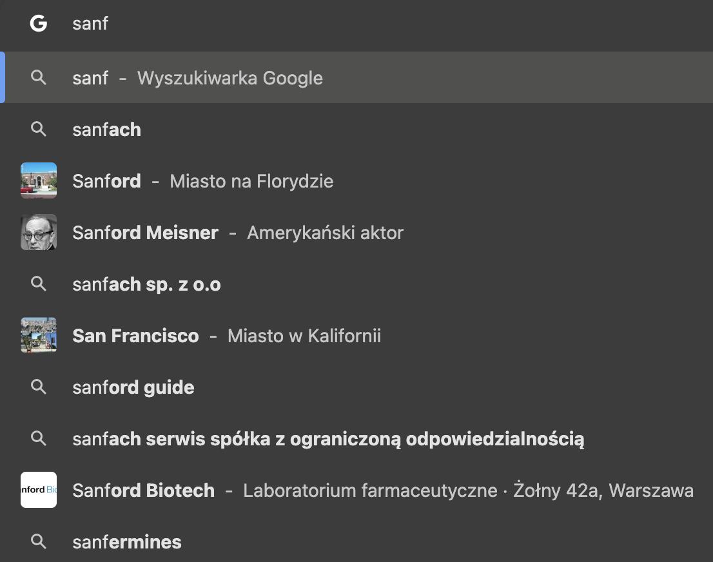
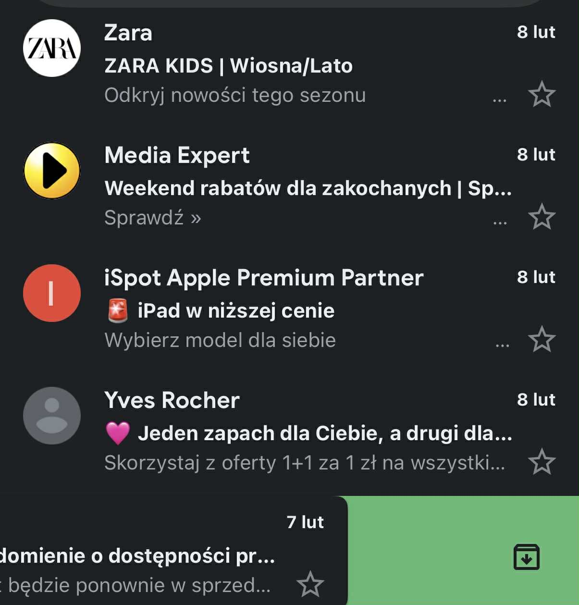

Czym jest analiza heurystyczna i czemu służy?
Analiza heurystyczna to metoda sprawdzania, czy strona lub aplikacja jest łatwa w obsłudze. Polega na porównaniu projektu z 10 zasadami użyteczności, które pomagają znaleźć błędy i problemy dla użytkownika.
Dzięki temu można wcześniej zauważyć problemy, które mogą utrudniać korzystanie ze strony lub aplikacji, i je poprawić.
Kto opracował zbiór zasad heurystycznych
Zbiór 10 najpopularniejszych zasad heurystycznych (heurystyki użyteczności) opracowali Jakob Nielsen oraz Ralf Molich na początku lat 90. XX wieku.
1: Widoczność stanu systemu
En: The design should always keep users informed about what is going on, through appropriate feedback within a reasonable amount of time.
Pl:Projekt powinien na bieżąco informować użytkowników o tym, co się dzieje, za pomocą odpowiedniej informacji zwrotnej wysyłanej w rozsądnym czasie.
2: Porównanie systemu ze światem rzeczywistym
En: The design should speak the users' language. Use words, phrases, and concepts familiar to the user, rather than internal jargon. Follow real-world conventions, making information appear in a natural and logical order.
Pl:Projekt powinien przemawiać językiem użytkowników. Używaj słów, zwrotów i pojęć znanych użytkownikowi, zamiast wewnętrznego żargonu. Stosuj się do konwencji obowiązujących w świecie rzeczywistym, aby informacje pojawiały się w naturalnej i logicznej kolejności.
3: Kontrola i wolność użytkownika
En: Users often perform actions by mistake. They need a clearly marked "emergency exit" to leave the unwanted action without having to go through an extended process.
Pl:Użytkownicy często wykonują czynności przez pomyłkę. Potrzebują wyraźnie oznaczonego „wyjścia awaryjnego”, aby opuścić niechcianą czynność bez konieczności przechodzenia przez długi proces.
4: Spójność i standardy
En: Users should not have to wonder whether different words, situations, or actions mean the same thing. Follow platform and industry conventions.
Pl:Użytkownicy nie powinni zastanawiać się, czy różne słowa, sytuacje czy działania oznaczają to samo. Przestrzegaj konwencji obowiązujących na platformie i w branży.
5: Zapobieganie błędom
En: Good error messages are important, but the best designs carefully prevent problems from occurring in the first place. Either eliminate error-prone conditions, or check for them and present users with a confirmation option before they commit to the action.
Pl:Dobre komunikaty o błędach są ważne, ale najlepsze projekty starannie zapobiegają występowaniu problemów. Eliminuj sytuacje podatne na błędy lub sprawdzaj je i wyświetlaj użytkownikom opcję potwierdzenia, zanim podejmą działanie.
6: Rozpoznawanie, a nie przypominanie
En: Minimize the user's memory load by making elements, actions, and options visible. The user should not have to remember information from one part of the interface to another. Information required to use the design (e.g. field labels or menu items) should be visible or easily retrievable when needed.
Pl:Zminimalizuj obciążenie pamięci użytkownika, zapewniając widoczność elementów, akcji i opcji. Użytkownik nie powinien musieć zapamiętywać informacji z jednej części interfejsu do drugiej. Informacje niezbędne do korzystania z projektu (np. etykiety pól lub pozycje menu) powinny być widoczne lub łatwo dostępne w razie potrzeby.
7: Elastyczność i efektywność użytkowania
En: Shortcuts — hidden from novice users — may speed up the interaction for the expert user so that the design can cater to both inexperienced and experienced users. Allow users to tailor frequent actions.
Pl: Skróty – ukryte przed początkującymi użytkownikami – mogą przyspieszyć interakcję dla doświadczonych użytkowników, dzięki czemu projekt jest dostosowany zarówno do potrzeb niedoświadczonych, jak i doświadczonych użytkowników. Umożliw użytkownikom dostosowanie często wykonywanych czynności.


8: Estetyczny i minimalistyczny design
En: Interfaces should not contain information that is irrelevant or rarely needed. Every extra unit of information in an interface competes with the relevant units of information and diminishes their relative visibility.
Pl:Interfejsy nie powinny zawierać informacji nieistotnych lub rzadko potrzebnych. Każda dodatkowa jednostka informacji w interfejsie konkuruje z odpowiednimi jednostkami informacji i zmniejsza ich względną widoczność.
9: Pomóż użytkownikom rozpoznawać, diagnozować i usuwać błędy
En: Error messages should be expressed in plain language (no error codes), precisely indicate the problem, and constructively suggest a solution.
Pl:Komunikaty o błędach powinny być wyrażone prostym językiem (bez kodów błędów), dokładnie wskazywać problem i konstruktywnie proponować rozwiązanie.
10: Pomoc i dokumentacja
En: It’s best if the system doesn’t need any additional explanation. However, it may be necessary to provide documentation to help users understand how to complete their tasks.
Pl:Najlepiej, jeśli system nie wymaga żadnych dodatkowych wyjaśnień. Może jednak zaistnieć konieczność udostępnienia dokumentacji, która pomoże użytkownikom zrozumieć, jak wykonywać swoje zadania.